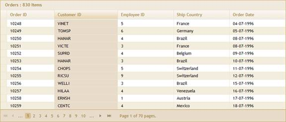
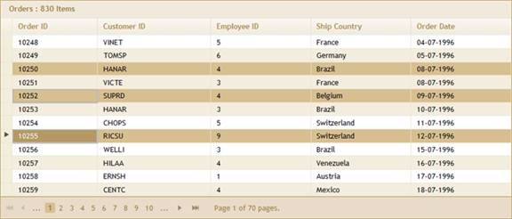
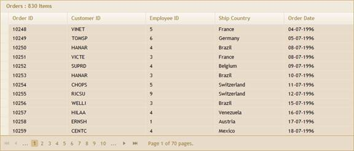
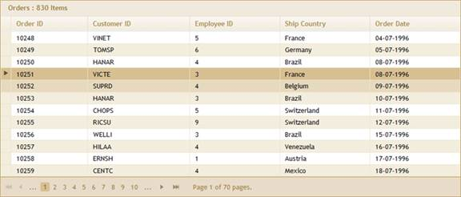
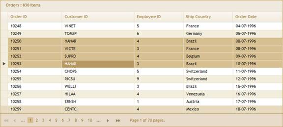

You can select one or more rows/records of the Grid using some keyboard keys. Before selecting, you need to enable this feature by setting the Selection property to True.
Properties
|
Property |
Description |
Type of property |
Value it accepts |
Any other dependencies/sub-properties associated |
|
AllowSelection |
Enables/disables the selection feature in grid. |
bool |
True/false |
NA |
|
AllowColumnSelection |
Enables/Disables the column selection I grid. |
bool |
True/false |
NA |
|
RowsSelectionMode
|
Gets or Sets the row selection mode for grid. |
Enum |
RowsSelectionMode .Toggle, RowsSelectionMode .Normal |
NA |
Methods
|
Method |
Parameters |
Return type |
Description |
|
AllowSelection(bool) |
bool |
IGridBuilder<T> |
Used to Enable/disable the selection mode. |
|
AllowColumnSelection(bool) |
bool |
IGridBuilder<T> |
Used to enable/disable the column selection. |
|
RowSelectionMode(RowSelectionMode) |
RowSelectionMode enum value |
IGridBuilder<T> |
Used to set the RowSelectionMode in grid. |
After enabling the AllowSelection property, select any one row at run time. Now, by holding CTRL, you will be able to select other rows also using the left mouse button as in the image below.
The following are possible.
· Columns can be selected by clicking the upper 1/4 of their headers.
· Rows can be selected either by clicking the row header or any cell of the row.
· The whole grid can be selected by clicking the cell at the upper-left corner of the grid.
· The ESC key is used to clear the selection.
· For multiple selections, use SHIFT+arrow keys for continuous selection of consecutive rows.
· Press CTRL and left-click to select random rows for multiple selections.
Selection is enabled by default.
Various selection styles
1. Column selection.

Figure 229: Column Selection
2. CTRL+mouse-click selection.

Figure 230: CTRL+Mouse Selection
3. Grid selection.

Figure 231: Grid Selection
4. Row selection.

Figure 232: Row Selection
5. SHIFT+arrow keys selection.

Figure 233: Shift+Arrow Keys Selection
 Toggle
Selection
Toggle
Selection